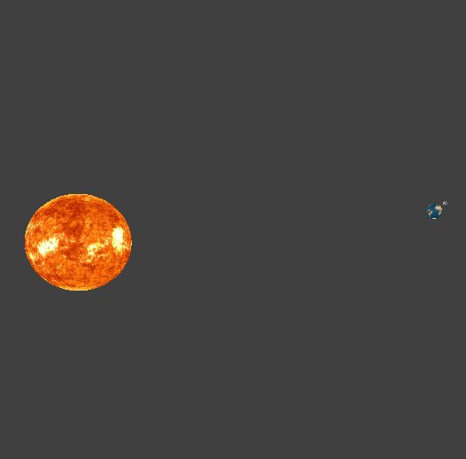
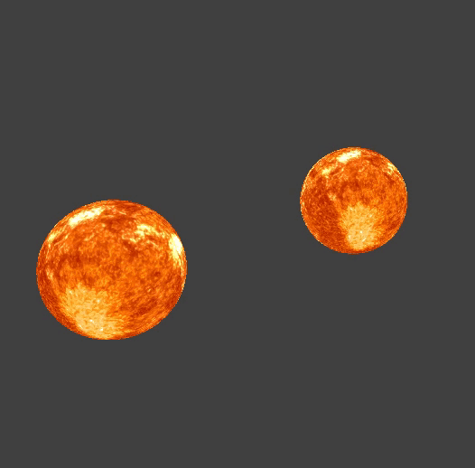
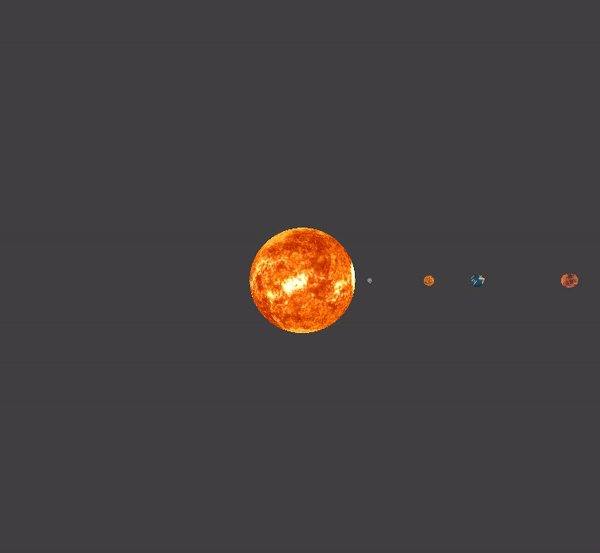

Our project is a planet simulator based on project 4’s cloth simulator. Many of the capabilities of the simulator are built from or inspired by code already given in project 4. By using it as a template for our simulator, we were able to simulate planetary systems using commonly known laws of gravitation. This project was motivated by the n-body problem, which describes the problem of predicting the individual motions of celestial objects resulting from gravitational interactions among them. Creating a planet simulator was our attempt at solving this problem and trying to better understand these motions.
Using astrophysics we can predict the trajectories of large bodies in a solar system or a galaxy. However, in order to do so we rely on approximations of some physical constants, and we are unsure of their accuracy. N-body simulations allow us to see the rotations of planets and stars on a larger scale in order to verify our approximations. We plan to implement such a simulation. We will first implement basic motion using Newton’s law of gravitation, then move on to planetary collisions if we have time.
To start the implementation of the planet simulator we need to understand the forces that will be involved within this system. Now note that we are dealing with celestial objects so things will become big and forces are going to become large. Because of this, small forces will not affect our system that much but we need to make sure that forces are accurate or note errors will propagate. Now we can see that for these types of objects (stars, planets, moons, asteroids, and etc) the major source of displacement is going to be the force of gravity. Note the force of gravity affects every pairwise object similar to how a spring will affect every object. However unlike a spring we do not have a rest length or a limit to proportionality. To do this we will iterate through all objects and compute the force of gravity that is object have on every object. To save some time on computation, when iterating on the i-th object we only have to iterate on the (i+1)-th to n-th object because we know that the force of gravity on i-th object due to the j-th object is equal to the force in the opposite direction on the j-th object by the i-th object. So when computing one pair of objects we can see that we are able to get 2 forces. Even with this we will have n^2 as (n^2)/2 is still O(n^2).
Now that we have summed up the forces we are going to compute the location update at every time step. Now we will be using the displacement formula or then modified euler. This will allow us to be able to relatively accurate steps and to ensure that we don't have errors propagating we are going to have each step be exactly 1 second. This means that the location update will be new_pos = old_pos + velocity + acceleration/2. Acceleration will be the the total force on the object divided by its mass.
Recall that we are using actual values and astronomical values can get really big really quickly. Now to scale down distance we are going to take the shortest distance within a certain coordinate and we are going to normalize all coordinates with that value when rendering. Note that we only scale the numbers down for rendering so that it will remain accurate for the computation.
An initial track implementation is quite simple since we want to know the location of where the sphere has been we simply need to store all the places at which the sphere was rendered. So every time the object is rendered we store its location as another sphere and place this into a vector of sphere which we will render every time this object is rendered. The track sphere will be 15th the size of the object so that it will still be visible and proportional to the object.
The newer implementation was based on the code from project 4 in drawWireframe, where several adjacent 3D coordinates were inserted into a matrix to be used as the source of each line. When comparing the two methods of drawing the trail, the latter was much faster than the former, especially at longer runtimes. The only issue with the latter implementation, however, were the strange lines being drawn around the center to some point outside the view of the camera after resetting and rerunning the simulation.
Now to optimize we are going to reduce the pairwise computation to do so we define a gravity margin. This gravity margin is going to be the one half the difference between the most massive object and least massive object. Then for every object we look to see if the difference in mass of the two objects is greater than or equal to the mass margin. With this we are able to filter out most of the computation against similar size planets as they are usually very far away.
We can procedurally generate a subset of the solar system. This is done by defining a number of planets and asteroids in a surrounding asteroid belt in the input file. We allow textures to be given for both planets and asteroids, in order to distinguish them and improve visibility of the system.
We believe the biggest lesson we all learned was that working on something without understanding it is dangerous. Firstly, Ryan was the only physics major of the three of us and the only one with nontrivial prior exposure to astrophysics. This meant that he was the only one who could fix a number of bugs involving our physical calculations. In retrospect it would have done us a lot of good for the other two of us to learn about astrophysics before starting work on this project. Finally, we assumed we wouldn’t need very much OpenGL since Project 4’s codebase would have most of the OpenGL already written, but as previously described we hit some limitations fairly quickly. Our solutions to these problems were mostly kludgy and inefficient before we acquired a fairly good understanding of OpenGL.
We are able to simulate different types of planetary systems. Below we have a planet-moon system, which illustrates the effects of gravitational forces between the sun (middle), the earth (second smallest sphere), and the moon (smallest sphere). As we would expect, the earth revolves around the sun as the moon revolves around the earth.
The second system that we can simulate is a binary star system. The system illustrates the trajectory of two stars revolving around each other due to their gravitational forces. In consideration of the structure of this type of system, the calculations used to simulate this system were the same calculations used as in any other system; in other words, our simulation was holistic enough to cover various systems.
The next system we were able to simulate was that of our own solar system. The example below first shows only the rocky planets (Mercury, Venus, Earth, Mars). Again, as we would expect, the closer the planet, the larger the gravitational force between the star and the planet, and vice versa.
